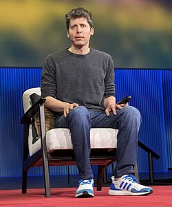

Altman creció en San Luis (Misuri), en una familia judía, como el mayor de cuatro hermanos. Su madre es dermatóloga y su padre era un agente inmobiliario. Recibió su primera computadora a la edad de ocho años.[8] Asistió a la escuela secundaria John Burroughs y estudió Ciencias de la Computación en la Universidad de Stanford hasta que abandonó los estudios en 2005.[9] En 2017, recibió un título honorario de la Universidad de Waterloo.[10

En 2005, a los diecinueve años,[11] Altman cofundó y se convirtió en director ejecutivo de Loopt,[12] una aplicación móvil de redes sociales basada en la ubicación. Después de recaudar más de $30 millones en capital de riesgo, Loopt se cerró en 2012 después de no poder obtener tracción. Fue adquirida por Green Dot Corporation por $43.4 millones. [13][14